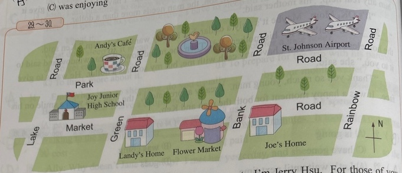
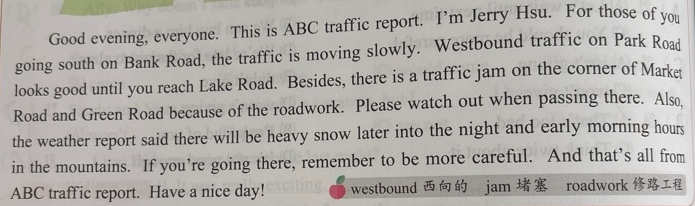
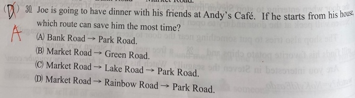

分享原卷｜page04-q30
完整原題
作答所需文章／材料
Good evening, everyone. This is ABC traffic report. I'm Jerry Hsu. For those of you going south on Bank Road, the traffic is moving slowly. Westbound traffic on Park Road looks good until you reach Lake Road. Besides, there is a traffic jam on the corner of Market Road and Green Road because of the roadwork. Please watch out when passing there. Also, the weather report said there will be heavy snow later into the night and early morning hours in the mountains. If you're going there, remember to be more careful. And that's all from ABC traffic report. Have a nice day! 【原卷字詞註釋】westbound：西向的；jam：堵塞；roadwork：修路工程。
Joe is going to have dinner with his friends at Andy's Café. If he starts from his house, which route can save him the most time?
(A) Bank Road → Park Road.
(B) Market Road → Green Road.
(C) Market Road → Lake Road → Park Road.
(D) Market Road → Rainbow Road → Park Road.
先想一想，再查看答案、解說與原圖
原卷作答：D，原卷紅筆訂正A
正確答案：A。從Joe家沿Bank Road往北，再沿Park Road向西到咖啡館；報導只說Bank Road向南慢，不影響此向北路線，最直接。
逐項解析
| 選項與原句 | 判讀 | 句意與判斷理由 |
|---|---|---|
| (A) Bank Road → Park Road. | 應選 | 從Joe家沿Bank Road往北，再沿Park Road向西到咖啡館；報導只說Bank Road向南慢，不影響此向北路線，最直接。 |
| (B) Market Road → Green Road. | 不選 | Market Road與Green Road交叉口施工塞車，這條路會經過該路口。 |
| (C) Market Road → Lake Road → Park Road. | 不選 | 必須沿Market Road向西經過Green Road施工路口，再繞Lake Road，會受影響。 |
| (D) Market Road → Rainbow Road → Park Road. | 不選 | 先往東到Rainbow Road再繞回Park Road，較A繞遠，無相應避開A必經堵點的優勢。 |
詳細說明與解題步驟
先用北箭頭確認方向，再把每個塞車點放回地圖：Bank Road只有南下慢，不能把整條Bank Road判成雙向塞車。Joe從家往咖啡館先北上，再沿Park Road往西；西向車流在到Lake Road前尚順暢，而咖啡館位於Lake Road以東，因此A兼顧方向與較短路程。Market與Green交叉口的施工會影響B、C，D則繞道。
【A】從Joe家沿Bank Road往北，再沿Park Road向西到咖啡館；報導只說Bank Road向南慢，不影響此向北路線，最直接。
【B】Market Road與Green Road交叉口施工塞車，這條路會經過該路口。
【C】必須沿Market Road向西經過Green Road施工路口，再繞Lake Road，會受影響。
【D】先往東到Rainbow Road再繞回Park Road，較A繞遠，無相應避開A必經堵點的優勢。
核對註記：已實看原卷完整題文、選項及必要材料；來源標示第8單元，但無可核對翰林冊次章節，歸綜合。
原圖（僅本題）

